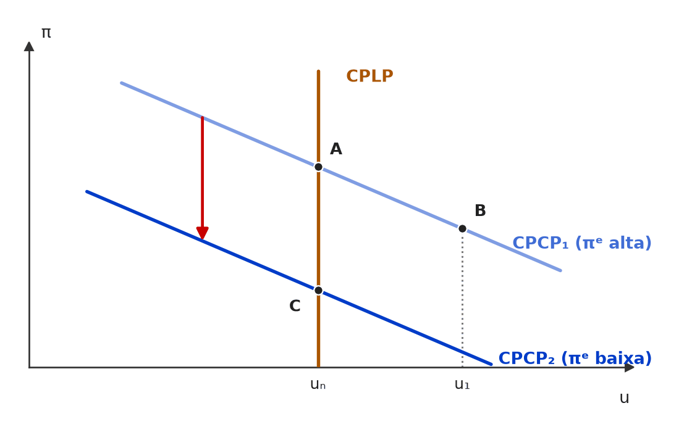
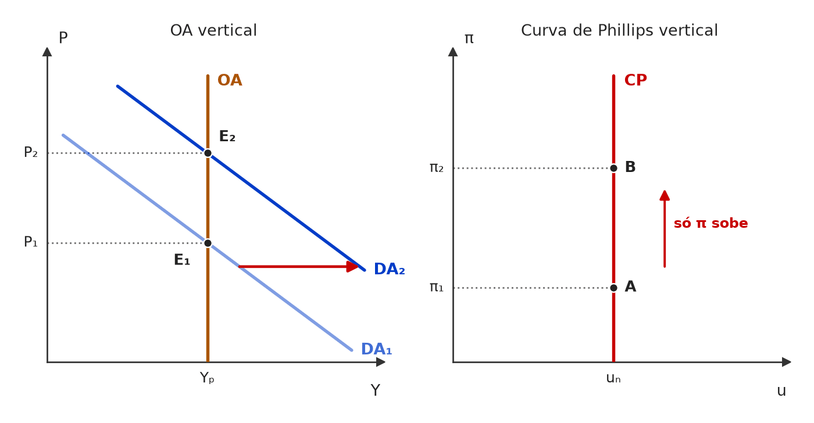
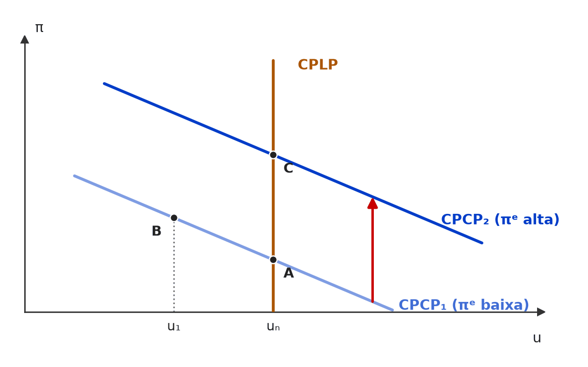
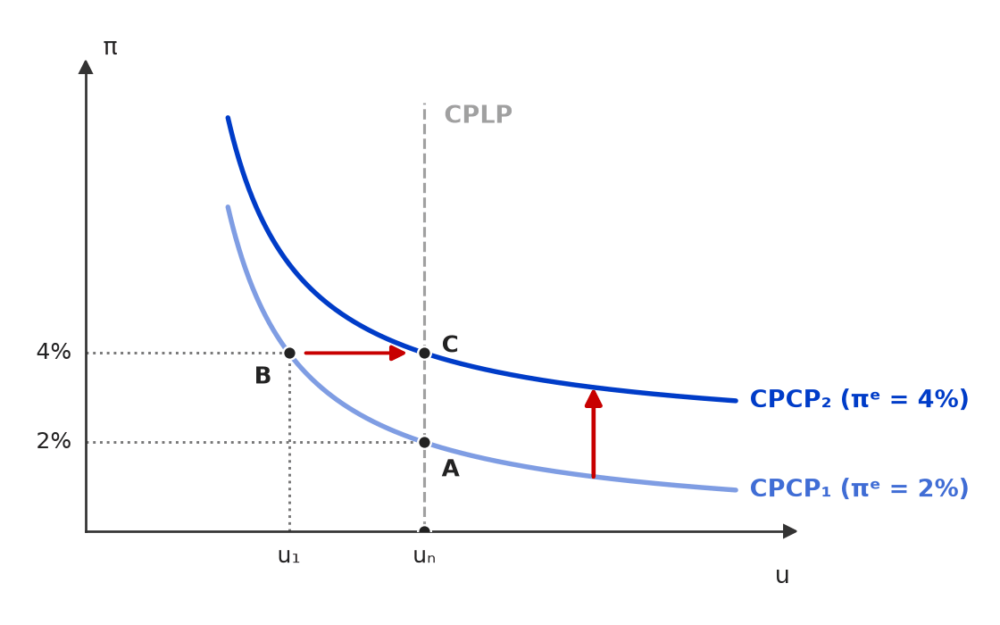

[C/E - Nabuco › Pré-TPS/2024 › Phillips original e aceleracionista]Em relação à curva de Phillips e à formação de expectativas dos agentes, julgue (C ou E) os itens a seguir. Item: A curva de Phillips baseou-se no que Friedman chamou de doutrina-padrão: elevação da renda leva a aumento do produto e do emprego. Essa curva relaciona inflação e emprego: taxas baixas de emprego podem ser obtidas com taxas mais altas de inflação. | ❌ ERRADO A curva de Phillips baseou-se no que Friedman chamou de doutrina-padrão: elevação da renda leva a aumento do produto e do emprego. Essa curva relaciona inflação e emprego: taxas baixas de emprego podem ser obtidas com taxas mais altas de inflação. 🎯 Em poucas palavras: O trade-off de Phillips é entre inflação e desemprego: inflação mais alta compra desemprego mais baixo (ou emprego mais alto) — e, depois de Friedman, só no curto prazo. 📖 Destrinchando o tema:
🧐 Dissecando a redação do item: [inversão · troca de conceito] O item gasta uma linha inteira de contexto plausível e esconde o erro numa sílaba: “emprego” no lugar de “desemprego”. Quem lê rápido vê “baixo … com inflação alta” e confirma por reflexo. 🔥 Em Phillips, confira sempre qual variável está no eixo horizontal. 😈 Para dificultar:
✍️ Reescrita correta: A curva de Phillips baseou-se no que Friedman chamou de doutrina-padrão: elevação da renda leva a aumento do produto e do emprego. Essa curva relaciona inflação e emprego: taxas baixas de desemprego podem ser obtidas com taxas mais altas de inflação. |
[C/E - Nabuco › Pré-TPS/2023 › Phillips original e aceleracionista]Sobre as teorias macroeconômicas, julgue (C ou E) os seguintes itens. Item: De acordo com a versão aceleracionista da Curva de Phillips, quando a taxa de desemprego excede a taxa natural de desemprego, a taxa de inflação aumenta. | ❌ ERRADO De acordo com a versão aceleracionista da Curva de Phillips, quando a taxa de desemprego excede a taxa natural de desemprego, a taxa de inflação aumenta. 🎯 Em poucas palavras: Na aceleracionista, πₜ − πₜ₋₁ = −α(uₜ − uₙ): desemprego acima da taxa natural faz a inflação cair; abaixo dela, acelerar. 📖 Destrinchando o tema:
🧐 Dissecando a redação do item: [inversão] Troca o sinal da relação. A pista é “excede”: desemprego acima do natural é folga, e folga não pressiona preços. 🔥 Nabuco e CEBRASPE gostam de pedir o sentido da aceleração a partir da equação Δπ = −α(u − uₙ). 😈 Para dificultar:
✍️ Reescrita correta: De acordo com a versão aceleracionista da Curva de Phillips, quando a taxa de desemprego excede a taxa natural de desemprego, a taxa de inflação diminui. |
❌ [C/E - Prof. Rodrigo Teixeira › Intensivo Pré-TPS/2023 › Phillips original e aceleracionista]Julgue os itens seguintes, a respeito da relação entre inflação e desemprego na macroeconomia. Item: Segundo a curva de Phillips na versão com expectativas adaptativas, a recente elevação dos juros pelo Banco Central do Brasil levará a aumento do desemprego apenas no curto prazo. | ✅ CERTO Segundo a curva de Phillips na versão com expectativas adaptativas, a recente elevação dos juros pelo Banco Central do Brasil levará a aumento do desemprego apenas no curto prazo. 🎯 Em poucas palavras: Política contracionista move a economia ao longo da curva de curto prazo: inflação cai, desemprego sobe acima de uₙ. Com expectativas adaptativas, πᵉ recua aos poucos, a curva desce e o desemprego volta ao natural — o custo é temporário. 📖 Destrinchando o tema:
📈 No gráfico:  A alta de juros leva a economia de A para B ao longo da CPCP₁: a inflação cai, mas o desemprego sobe acima de uₙ. Com expectativas adaptativas, a inflação esperada recua aos poucos, a curva de curto prazo desce para CPCP₂ e a economia volta a uₙ em C — o desemprego extra foi só de curto prazo. 🧐 Dissecando a redação do item: [modulador relativo · literalidade] O “apenas no curto prazo” parece restrição perigosa, mas é exatamente a tese da versão adaptativa: o trade-off existe e é temporário. O contexto brasileiro é decoração; o julgamento é teórico. 😈 Para dificultar:
|
[C/E - Prof. Rodrigo Teixeira › Intensivo Pré-TPS/2023 › Phillips original e aceleracionista]Julgue os itens seguintes, a respeito da relação entre inflação e desemprego na macroeconomia. Item: Se a oferta agregada é inelástica a preços, a curva de Phillips será negativamente inclinada. | ❌ ERRADO Se a oferta agregada é inelástica a preços, a curva de Phillips será negativamente inclinada. 🎯 Em poucas palavras: OA inelástica (vertical) = produto fixo no potencial: choques de demanda só mexem nos preços. Sem variação de produto, o desemprego não sai de uₙ — a curva de Phillips também é vertical. 📖 Destrinchando o tema:
📈 No gráfico:  Com a oferta agregada vertical (inelástica a preços), a expansão da demanda de DA₁ para DA₂ só eleva os preços: o produto fica em Yₚ e o desemprego não sai de uₙ. Traduzida para o plano inflação × desemprego, a mesma economia dá uma curva de Phillips vertical, sem trade-off. 🧐 Dissecando a redação do item: [troca de conceito · inversão] O item cruza uma premissa de longo prazo (OA inelástica) com uma conclusão de curto prazo (trade-off). A pista é “inelástica a preços”: se o produto não reage ao preço, não há como o desemprego reagir à inflação. 😈 Para dificultar:
✍️ Reescrita correta: Se a oferta agregada é inelástica a preços, a curva de Phillips será vertical na taxa natural de desemprego. |
❌ [C/E - Prof. Rodrigo Teixeira › Intensivo Pré-TPS/2023 › Phillips original e aceleracionista]Durante a pandemia, a taxa de desemprego aumentou muito no Brasil e em todo o mundo. A respeito dos conceitos de desemprego e das suas relações com a inflação e atividade econômica, julgue os itens a seguir. Item: Segundo a versão aceleracionista, a Curva de Philips de longo prazo é negativamente inclinada, ou seja, há um trade off entre inflação e desemprego. | ❌ ERRADO Segundo a versão aceleracionista, a Curva de Philips de longo prazo é negativamente inclinada, ou seja, há um trade off entre inflação e desemprego. 🎯 Em poucas palavras: Na aceleracionista (Friedman–Phelps), a curva de longo prazo é vertical na taxa natural: não há trade-off permanente. A inclinação negativa é só da curva de curto prazo, dada a inflação esperada. 📖 Destrinchando o tema:
🧐 Dissecando a redação do item: [troca de conceito · anacronismo] Atribui à aceleracionista a tese da curva original. O “de longo prazo” é a palavra que decide: em qualquer versão com expectativas, longo prazo = vertical. 😈 Para dificultar:
✍️ Reescrita correta: Segundo a versão aceleracionista, a Curva de Philips de longo prazo é vertical, ou seja, não há um trade off entre inflação e desemprego. |
❌ [C/E - Prof. Rodrigo Teixeira › Intensivo Pré-TPS/2023 › Phillips original e aceleracionista]Sobre a relação entre inflação e desemprego, julgue os itens a seguir. Item: Na versão aceleracionista da curva de Phillips, expansões da oferta de moeda que façam o desemprego ficar abaixo da taxa natural no curto prazo, levarão a um aumento nas expectativas de inflação e ao deslocamento da curva de Phillips de longo prazo para cima e para direita. | ❌ ERRADO Na versão aceleracionista da curva de Phillips, expansões da oferta de moeda que façam o desemprego ficar abaixo da taxa natural no curto prazo, levarão a um aumento nas expectativas de inflação e ao deslocamento da curva de Phillips de longo prazo para cima e para direita. 🎯 Em poucas palavras: O aumento de πᵉ desloca para cima a curva de curto prazo. A de longo prazo é vertical em uₙ e só se moveria se a própria taxa natural mudasse — o que expansão monetária não faz. 📖 Destrinchando o tema:
📈 No gráfico:  A expansão monetária leva a economia de A para B ao longo da curva de curto prazo CPCP₁. Com a inflação esperada revista para cima, quem se desloca é a CPCP (de CPCP₁ para CPCP₂); a CPLP fica parada, vertical em uₙ, e a economia volta ao desemprego natural em C, com inflação maior. 🧐 Dissecando a redação do item: [troca de conceito · meia-verdade] Todo o mecanismo está certo até “aumento nas expectativas”; o erro está no objeto do deslocamento (longo × curto prazo) e na direção enxertada (“e para direita”). Pista: curva vertical que se desloca “para cima” não muda de lugar. 😈 Para dificultar:
✍️ Reescrita correta: Na versão aceleracionista da curva de Phillips, expansões da oferta de moeda que façam o desemprego ficar abaixo da taxa natural no curto prazo, levarão a um aumento nas expectativas de inflação e ao deslocamento da curva de Phillips de curto prazo para cima |
[C/E - Prof. Rodrigo Teixeira › Intensivo Pré-TPS/2023 › Phillips original e aceleracionista]Sobre a relação entre inflação e desemprego, julgue os itens a seguir. Item: Na curva de Phillips versão sem expectativas, o trade off entre inflação e desemprego é temporário e válido apenas no curto prazo, sendo a curva de Phillips de curto prazo vertical na taxa natural de desemprego. | ❌ ERRADO Na curva de Phillips versão sem expectativas, o trade off entre inflação e desemprego é temporário e válido apenas no curto prazo, sendo a curva de Phillips de curto prazo vertical na taxa natural de desemprego. 🎯 Em poucas palavras: Duplo erro: na versão sem expectativas (a original), o trade-off é permanente e a curva é negativamente inclinada; a distinção curto × longo prazo e a verticalidade em uₙ só aparecem com Friedman e Phelps. 📖 Destrinchando o tema:
🧐 Dissecando a redação do item: [troca de conceito · contradição] Atribui à versão original as conclusões das versões posteriores, e ainda se contradiz (trade-off de curto prazo com curva de curto prazo vertical). Pista: “sem expectativas” e “taxa natural” não convivem — a taxa natural nasce junto com as expectativas. 😈 Para dificultar:
✍️ Reescrita correta: Na curva de Phillips versão sem expectativas, o trade off entre inflação e desemprego é permanente, sendo a curva de Phillips negativamente inclinada, sem distinção entre curto e longo prazo. |
❌ [C/E - Prof. Rodrigo Teixeira › Intensivo Pré-TPS/2023 › Phillips original e aceleracionista]Sobre a relação entre inflação e desemprego, julgue os itens a seguir. Item: Segundo Friedman, é possível o desemprego ficar abaixo da taxa natural no curto prazo. No longo prazo, porém, a curva de Phillips é vertical na taxa natural de desemprego, tal como na versão com expectativas racionais. | ✅ CERTO Segundo Friedman, é possível o desemprego ficar abaixo da taxa natural no curto prazo. No longo prazo, porém, a curva de Phillips é vertical na taxa natural de desemprego, tal como na versão com expectativas racionais. 🎯 Em poucas palavras: Friedman: trade-off só no curto prazo, CPLP vertical em uₙ. Os novos clássicos chegam à mesma vertical de longo prazo — a diferença está no curto prazo e na velocidade do ajuste. 📖 Destrinchando o tema:
🧐 Dissecando a redação do item: [literalidade · detalhe] Duas afirmações certas encadeadas. O “tal como na versão com expectativas racionais” é o ponto que derruba quem acha que as escolas divergem em tudo: no longo prazo elas concordam. 😈 Para dificultar:
|
[C/E - Nabuco › Pré-TPS/2022 › Phillips original e aceleracionista]Em relação à Curva de Phillips e ao modelo de oferta e demanda agregada, julgue (C ou E) os itens a seguir. Item: Com relação à versão aceleracionista, se a curva de Phillips for inclinada (mas não vertical) e as expectativas forem adaptativas, então a política monetária pode afetar o nível de emprego no curto prazo, mas não no longo prazo. | ✅ CERTO Com relação à versão aceleracionista, se a curva de Phillips for inclinada (mas não vertical) e as expectativas forem adaptativas, então a política monetária pode afetar o nível de emprego no curto prazo, mas não no longo prazo. 🎯 Em poucas palavras: É a conclusão monetarista de Friedman: com curva de curto prazo inclinada e expectativas adaptativas, a expansão monetária reduz o desemprego enquanto as expectativas não se ajustam; ajustadas, o desemprego volta a uₙ e só fica a inflação maior. 📖 Destrinchando o tema:
🧐 Dissecando a redação do item: [literalidade · modulador relativo] Reproduz a síntese monetarista. O “pode” e o par “curto prazo, mas não longo” encaixam exatamente na versão adaptativa; a armadilha seria trocar o tipo de expectativa ou inverter os prazos. 😈 Para dificultar:
|
[C/E - Nabuco › Pré-TPS/2022 › Phillips original e aceleracionista]Em relação à Curva de Phillips e ao modelo de oferta e demanda agregada, julgue (C ou E) os itens a seguir. Item: Segundo Friedman, é possível reduzir a taxa de desemprego observada em relação à taxa natural com políticas monetárias expansionistas. Daí vem a denominação dessa corrente, o monetarismo. Friedman apoia suas ideias no tripé: taxa natural de desemprego, curva de Phillips e expectativas adaptativas. | ✅ CERTO Segundo Friedman, é possível reduzir a taxa de desemprego observada em relação à taxa natural com políticas monetárias expansionistas. Daí vem a denominação dessa corrente, o monetarismo. Friedman apoia suas ideias no tripé: taxa natural de desemprego, curva de Phillips e expectativas adaptativas. 🎯 Em poucas palavras: Para Friedman, a expansão monetária pode levar o desemprego abaixo de uₙ — mas só no curto prazo, enquanto as expectativas adaptativas não alcançam a inflação. O tripé citado é o da sua crítica à curva de Phillips. ⚠️ Gabarito contestável: a frase “daí vem a denominação dessa corrente” é frouxa. O rótulo monetarismo (cunhado por Karl Brunner, 1968) vem da primazia que a corrente dá à oferta de moeda na determinação da renda nominal e da inflação (teoria quantitativa reformulada), e não da tese de que a moeda reduz o desemprego. A banca aceitou o item pelo conjunto; numa prova mais rigorosa, esse nexo poderia render ERRADO. 📖 Destrinchando o tema:
🧐 Dissecando a redação do item: [literalidade · modulador relativo] As duas pontas verdadeiras (efeito possível; tripé) sustentam o CERTO; o “é possível” não afirma permanência. O elo frágil é o “daí vem a denominação”, um nexo histórico duvidoso que a banca deixou passar. 😈 Para dificultar:
|
❌ [C/E - Banca não identificada › Phillips original e aceleracionista]Julgue o item a seguir, relativo à curva de Phillips. Item: A curva de Phillips descreve a relação direta entre maior taxa de desemprego e maior taxa de variação dos salários nominais. | ❌ ERRADO A curva de Phillips descreve a relação direta entre maior taxa de desemprego e maior taxa de variação dos salários nominais. 🎯 Em poucas palavras: A curva original de Phillips (1958) é inversa: desemprego alto ↔ salários nominais crescendo devagar; desemprego baixo ↔ salários acelerando. 📖 Destrinchando o tema:
🧐 Dissecando a redação do item: [inversão] Troca “inversa” por “direta” e ajusta o par (“maior … maior”) para parecer coerente. A frase lida rápido soa técnica; o teste é perguntar se desemprego alto dá aos trabalhadores força para pedir aumento — não dá. 😈 Para dificultar:
✍️ Reescrita correta: A curva de Phillips descreve a relação inversa entre maior taxa de desemprego e menor taxa de variação dos salários nominais. |
[C/E - Banca não identificada › Phillips original e aceleracionista]Julgue o item a seguir, relativo à curva de Phillips. Item: A curva de Phillips apresenta o grau de sacrifício necessário, em termos de desemprego, para que se controle a inflação. | ✅ CERTO A curva de Phillips apresenta o grau de sacrifício necessário, em termos de desemprego, para que se controle a inflação. 🎯 Em poucas palavras: Ao relacionar inversamente inflação e desemprego no curto prazo, a curva de Phillips mostra o custo, em desemprego, de reduzir a inflação — a ideia da taxa de sacrifício. 📖 Destrinchando o tema:
🧐 Dissecando a redação do item: [paráfrase fiel] Descreve a leitura de política da curva (custo da desinflação). Pode parecer imprecisa porque “grau de sacrifício” é medida derivada, mas a ideia de que a curva mostra esse custo é a dos manuais. 😈 Para dificultar:
|
[C/E - Banca não identificada › Phillips original e aceleracionista]Julgue o item a seguir, relativo à curva de Phillips. Item: A “Curva de Phillips” oferece aos formuladores de políticas uma gama de possíveis resultados econômicos: ao alterarem as políticas monetária e fiscal para influenciar a demanda agregada, eles podem escolher qualquer ponto desta curva, que ilustra o trade-off de inflação e desemprego no curto prazo. | ✅ CERTO A “Curva de Phillips” oferece aos formuladores de políticas uma gama de possíveis resultados econômicos: ao alterarem as políticas monetária e fiscal para influenciar a demanda agregada, eles podem escolher qualquer ponto desta curva, que ilustra o trade-off de inflação e desemprego no curto prazo. 🎯 Em poucas palavras: É a leitura de menu de política da curva de Phillips de curto prazo: mexendo na DA, o governo escolhe a combinação de inflação e desemprego — enquanto as expectativas estiverem dadas. 📖 Destrinchando o tema:
🧐 Dissecando a redação do item: [literalidade · modulador relativo] O “qualquer ponto” parece generalização indevida, mas está amarrado a “desta curva” e a “no curto prazo”: dado o πᵉ, a política de demanda escolhe pontos ao longo dela. Errado seria estender o menu ao longo prazo. 😈 Para dificultar:
|
[C/E - Banca não identificada › Phillips original e aceleracionista]Julgue o item a seguir, relativo à curva de Phillips. Item: A Curva de Phillips ilustra a relação inversa entre desemprego e inflação. | ✅ CERTO A Curva de Phillips ilustra a relação inversa entre desemprego e inflação. 🎯 Em poucas palavras: Na forma tradicional, a curva de Phillips é negativamente inclinada: menos desemprego vem acompanhado de mais inflação, e vice-versa. 📖 Destrinchando o tema:
🧐 Dissecando a redação do item: [literalidade] Definição pura. A dúvida plantada é se o candidato vai exigir “no curto prazo” para marcar CERTO. Sem modulador em contrário, a banca aceita a descrição da curva tradicional. 😈 Para dificultar:
|
[C/E - IDEG – Prof. Bozan › Pré-TPS/2026 › Expectativas e NAIRU]Considere o modelo de demanda e oferta agregada, especialmente no contexto de choques de demanda e políticas econômicas. Julgue o item a seguir. Item: As expectativas adaptativas emergem através da observação das condições econômicas passadas. Portanto, tornam a inflação um fenômeno inercial, ainda que a curva de oferta agregada de longo prazo permaneça estática. Essa percepção gera um comportamento de ajuste gradual a qualquer mudança no cenário inflacionário. | ✅ CERTO As expectativas adaptativas emergem através da observação das condições econômicas passadas. Portanto, tornam a inflação um fenômeno inercial, ainda que a curva de oferta agregada de longo prazo permaneça estática. Essa percepção gera um comportamento de ajuste gradual a qualquer mudança no cenário inflacionário. 🎯 Em poucas palavras: Se πᵉₜ = πₜ₋₁ (ou uma média do passado), a inflação de ontem entra nos reajustes de hoje: a inflação se perpetua (inércia) e as expectativas só se ajustam aos poucos, mesmo com a OALP parada em Yₙ. 📖 Destrinchando o tema:
🧐 Dissecando a redação do item: [paráfrase fiel] Três frases corretas encadeadas; a do meio tenta assustar com a OALP “estática”, que é irrelevante para a inércia (fenômeno das expectativas, não do produto potencial). A palavra-chave é “passadas”. 😈 Para dificultar:
|
❌ [C/E - Nabuco › Expectativas e NAIRU]Em relação à teoria macroeconômica, julgue o item a seguir. Item: A Curva de Oferta Agregada de Lucas estabelece que variações antecipadas na quantidade de moeda afetam o produto no curto prazo. | ❌ ERRADO A Curva de Oferta Agregada de Lucas estabelece que variações antecipadas na quantidade de moeda afetam o produto no curto prazo. 🎯 Em poucas palavras: Em Lucas, só a moeda não antecipada (surpresa) afeta o produto no curto prazo; a antecipada entra nas expectativas e nos preços e é neutra até no curto prazo. 📖 Destrinchando o tema:
🧐 Dissecando a redação do item: [inversão] Troca “não antecipadas” por “antecipadas”. 🔥 Pegadinha recorrente em itens sobre Lucas: a banca alterna antecipada/não antecipada e curto/longo prazo; leia o adjetivo antes do prazo. 😈 Para dificultar:
✍️ Reescrita correta: A Curva de Oferta Agregada de Lucas estabelece que variações não antecipadas na quantidade de moeda afetam o produto no curto prazo. |
[C/E - Nabuco › Expectativas e NAIRU]Em relação aos modelos macroeconômicos, julgue o item a seguir. Item: A Hipótese da Taxa Natural de Friedman sugere que uma curva de Phillips estável e com inclinação descendente existe no longo prazo. | ❌ ERRADO A Hipótese da Taxa Natural de Friedman sugere que uma curva de Phillips estável e com inclinação descendente existe no longo prazo. 🎯 Em poucas palavras: A hipótese da taxa natural diz o contrário: no longo prazo a curva de Phillips é vertical em uₙ; a inclinação descendente só existe no curto prazo, e a curva se desloca com as expectativas. 📖 Destrinchando o tema:
📈 No gráfico:  Partindo de A (u = uₙ, inflação esperada de 2%), a expansão leva a B: desemprego menor à custa de mais inflação, ao longo da CPCP₁. Quando as expectativas se ajustam, a curva de curto prazo sobe (CPCP₂) e o desemprego volta a uₙ em C, com inflação maior: no longo prazo só resta a vertical CPLP. 🧐 Dissecando a redação do item: [troca de conceito · inversão] Atribui a Friedman a visão que ele combateu (a curva estável de Samuelson-Solow). Pista: “taxa natural” já anuncia um ponto fixo de desemprego, incompatível com trade-off permanente. 😈 Para dificultar:
✍️ Reescrita correta: A Hipótese da Taxa Natural de Friedman sugere que uma curva de Phillips vertical, na taxa natural de desemprego, existe no longo prazo. |
[C/E - Nabuco › Expectativas e NAIRU]Em relação aos modelos macroeconômicos, julgue o item a seguir. Item: De acordo com Friedman, as políticas expansionistas podem reduzir temporariamente o desemprego abaixo da taxa natural no curto prazo. | ✅ CERTO De acordo com Friedman, as políticas expansionistas podem reduzir temporariamente o desemprego abaixo da taxa natural no curto prazo. 🎯 Em poucas palavras: Com expectativas adaptativas, a inflação não antecipada engana os trabalhadores por um tempo: o salário real cai sem que eles percebam, as firmas contratam mais e o desemprego fica abaixo de uₙ — até as expectativas se ajustarem. 📖 Destrinchando o tema:
🧐 Dissecando a redação do item: [literalidade · modulador relativo] Item redundante de propósito (“temporariamente … no curto prazo”) e protegido por “podem”. A dúvida plantada: achar que Friedman negava qualquer efeito da política — ele negava o efeito permanente. 😈 Para dificultar:
|
[C/E - Nabuco › Expectativas e NAIRU]Em relação à macroeconomia, julgue o item a seguir. Item: A Curva de Oferta Agregada de Lucas estabelece que variações antecipadas na quantidade de moeda afetam o produto apenas no curto prazo. | ❌ ERRADO A Curva de Oferta Agregada de Lucas estabelece que variações antecipadas na quantidade de moeda afetam o produto apenas no curto prazo. 🎯 Em poucas palavras: Em Lucas, a moeda antecipada não afeta o produto nem no curto prazo: é incorporada às expectativas e só eleva os preços. Efeito de curto prazo é privilégio da surpresa. 📖 Destrinchando o tema:
🧐 Dissecando a redação do item: [troca de ator · restrição indevida] Mais sutil que trocar “antecipada” por “não antecipada”: o “apenas no curto prazo” soa como cautela e faz o item parecer certo, mas descreve o resultado monetarista. 🔥 Itens sobre Lucas alternam antecipada × não antecipada e curto × longo prazo. 😈 Para dificultar:
✍️ Reescrita correta: A Curva de Oferta Agregada de Lucas estabelece que variações antecipadas na quantidade de moeda não afetam o produto nem mesmo no curto prazo. |
[C/E - Nabuco › Expectativas e NAIRU]Em relação à macroeconomia, julgue o item a seguir. Item: A versão aceleracionista da curva de Phillips difere substancialmente da chamada curva de oferta de Lucas, particularmente no que se refere ao trade-off entre inflação e desemprego. | ❌ ERRADO A versão aceleracionista da curva de Phillips difere substancialmente da chamada curva de oferta de Lucas, particularmente no que se refere ao trade-off entre inflação e desemprego. 🎯 Em poucas palavras: As duas têm a mesma estrutura: desvio do produto (ou do desemprego) só com erro de expectativa (π ≠ πᵉ), trade-off de curto prazo e nenhum trade-off de longo prazo. Diferem na formação das expectativas, não no trade-off. 📖 Destrinchando o tema:
🧐 Dissecando a redação do item: [contradição · extrapolação] O “difere substancialmente” é forte demais, e o “particularmente no trade-off” aponta justamente o ponto em que as duas coincidem. Para acertar, separe estrutura da curva (igual) e formação de expectativas (diferente). 😈 Para dificultar:
✍️ Reescrita correta: A versão aceleracionista da curva de Phillips assemelha-se bastante à chamada curva de oferta de Lucas, particularmente no que se refere ao trade-off entre inflação e desemprego. |
[C/E - Nabuco › Pré-TPS/2024 › Expectativas e NAIRU]Em relação à curva de Phillips e à formação de expectativas dos agentes, julgue o item a seguir. Item: A versão com expectativas adaptativas afirma que os agentes corrigem suas expectativas com base nos erros passados cometidos. | ✅ CERTO A versão com expectativas adaptativas afirma que os agentes corrigem suas expectativas com base nos erros passados cometidos. 🎯 Em poucas palavras: É a definição: πᵉₜ = πᵉₜ₋₁ + λ(πₜ₋₁ − πᵉₜ₋₁) — a nova expectativa é a anterior corrigida por uma fração λ do erro de previsão do período passado. 📖 Destrinchando o tema:
🧐 Dissecando a redação do item: [literalidade] Definição direta. O risco é confundir com expectativas racionais (que não dependem só do passado) e marcar ERRADO por achar que “corrigir erros” é coisa de agente racional. 😈 Para dificultar:
|
[C/E - Nabuco › Pré-TPS/2024 › Expectativas e NAIRU]Em relação à curva de Phillips e à formação de expectativas dos agentes, julgue o item a seguir. Item: Na versão com expectativas racionais, os agentes levam em conta todas as informações disponíveis para formar suas expectativas inflacionárias. | ✅ CERTO Na versão com expectativas racionais, os agentes levam em conta todas as informações disponíveis para formar suas expectativas inflacionárias. 🎯 Em poucas palavras: É a definição de expectativas racionais: πᵉ = E[π | toda a informação disponível] — passado, presente, política anunciada e o modelo da economia. 📖 Destrinchando o tema:
🧐 Dissecando a redação do item: [literalidade · contraintuitivo] Definição de manual. A palavra “todas” parece generalização exagerada, mas é o próprio conteúdo da hipótese: o erro seria lê-la como “previsão perfeita”. 😈 Para dificultar:
|
[C/E - Nabuco › Pré-TPS/2024 › Expectativas e NAIRU]Em relação à curva de Phillips e à formação de expectativas dos agentes, julgue (C ou E) os itens a seguir. Item: Na versão forte das expectativas racionais, na média a expectativa de inflação é igual a inflação efetiva. | ✅ CERTO Na versão forte das expectativas racionais, na média a expectativa de inflação é igual a inflação efetiva. 🎯 Em poucas palavras: Na versão forte das expectativas racionais, o erro de previsão tem média zero e é imprevisível: os agentes erram, mas não erram sistematicamente — logo, em média, πᵉ = π. 📖 Destrinchando o tema:
🧐 Dissecando a redação do item: [literalidade · detalhe] Reproduz a definição de manual. O risco está na leitura apressada que troca “na média” por “sempre”: quem acha que expectativas racionais exigem previsão perfeita marca ERRADO. O “na média” é exatamente o que salva o item. 😈 Para dificultar:
|
[C/E - Nidi/Jacqueline Bueno › Simulado Novembro/2024 › Expectativas e NAIRU]Considerando os determinantes do crescimento econômico e a experiência recente do Brasil, julgue certo ou errado (C ou E) os itens a seguir. Item: A hipótese de neutralidade da moeda no curto prazo é compatível com uma curva de Phillips vertical, em que tanto expansões fiscais quanto monetárias são capazes de afetar o nível de produto. | ❌ ERRADO A hipótese de neutralidade da moeda no curto prazo é compatível com uma curva de Phillips vertical, em que tanto expansões fiscais quanto monetárias são capazes de afetar o nível de produto. 🎯 Em poucas palavras: Curva de Phillips vertical = produto e desemprego presos ao nível natural: expansões de demanda, fiscais ou monetárias, só geram inflação. A primeira metade do item (neutralidade ↔ vertical) é coerente; o erro é dizer que as políticas afetam o produto. 📖 Destrinchando o tema:
🧐 Dissecando a redação do item: [contradição] O item começa coerente (neutralidade ↔ vertical) e se contradiz no fim: numa curva vertical, por definição, a demanda não afeta o produto. Cuidado com a tentação de marcar o erro em “curto prazo”: é hipótese aceitável dos novos clássicos — a contradição está no “são capazes”. 😈 Para dificultar:
✍️ Reescrita correta: A hipótese de neutralidade da moeda no curto prazo é compatível com uma curva de Phillips vertical, em que tanto expansões fiscais quanto monetárias não são capazes de afetar o nível de produto. |
❌ [C/E - Prof. Rodrigo Teixeira › Intensivo Pré-TPS/2023 › Expectativas e NAIRU]Julgue os itens abaixo acerca do modelo de oferta e demanda agregadas e da Curva de Phillips. Item 3: A existência de elevado desemprego e capacidade ociosa geradas pela pandemia aumenta a elasticidade da curva de oferta agregada de curto prazo, reduzindo os impactos das políticas econômicas expansionistas sobre a inflação. Item: Na situação do item 3, a curva de Phillips de longo prazo será negativamente inclinada. | ❌ ERRADO Na situação do item 3, a curva de Phillips de longo prazo será negativamente inclinada. 🎯 Em poucas palavras: Ociosidade torna mais elásticas a OA e a curva de Phillips de curto prazo. A de longo prazo continua vertical em uₙ: conjuntura não cria trade-off permanente. 📖 Destrinchando o tema:
🧐 Dissecando a redação do item: [troca de conceito · extrapolação] O item se apoia num item anterior verdadeiro (curto prazo) e estende a conclusão ao longo prazo, onde ela não vale. Pista: “de longo prazo” + “negativamente inclinada” é combinação proibida em qualquer versão com expectativas. 😈 Para dificultar:
✍️ Reescrita correta: Na situação do item 3, a curva de Phillips de longo prazo será vertical na taxa natural de desemprego. |
[C/E - Prof. Rodrigo Teixeira › Intensivo Pré-TPS/2023 › Expectativas e NAIRU]Julgue os itens seguintes, a respeito da relação entre inflação e desemprego na macroeconomia. Item: Segundo a versão das expectativas racionais da Curva de Phillips, a recente aprovação da autonomia do Banco Central, com mandatos fixos para presidente e diretoria, tende a fazer a inflação convergir para a meta mais rapidamente e com menores custos em termos de desemprego. | ✅ CERTO Segundo a versão das expectativas racionais da Curva de Phillips, a recente aprovação da autonomia do Banco Central, com mandatos fixos para presidente e diretoria, tende a fazer a inflação convergir para a meta mais rapidamente e com menores custos em termos de desemprego. 🎯 Em poucas palavras: Com expectativas racionais, o custo da desinflação depende da credibilidade: se os agentes acreditam no BC, baixam πᵉ já, a curva de Phillips de curto prazo desce logo e a taxa de sacrifício cai. Autonomia com mandatos fixos reforça a credibilidade. 📖 Destrinchando o tema:
🧐 Dissecando a redação do item: [literalidade · modulador relativo] Aplica ao caso brasileiro o argumento padrão credibilidade → expectativas → custo menor. O “tende a” protege o item; a versão absoluta (“eliminará o custo”) seria discutível. 😈 Para dificultar:
|
[C/E - Prof. Rodrigo Teixeira › Intensivo Pré-TPS/2023 › Expectativas e NAIRU]Sobre a teoria da política econômica numa economia aberta (modelo Mundell-Fleming), o modelo de oferta e demanda agregadas e a Curva de Phillips, julgue as afirmativas abaixo. Item: Se prevalece a versão da curva de Philips com expectativas racionais, um presidente que deseja se reeleger e fizesse uso de uma política fiscal expansionista num regime de câmbio fixo e perfeita mobilidade de capitais, teria sucesso em reduzir o desemprego no ano eleitoral, ou seja, no curto prazo. | ❌ ERRADO Se prevalece a versão da curva de Philips com expectativas racionais, um presidente que deseja se reeleger e fizesse uso de uma política fiscal expansionista num regime de câmbio fixo e perfeita mobilidade de capitais, teria sucesso em reduzir o desemprego no ano eleitoral, ou seja, no curto prazo. 🎯 Em poucas palavras: No Mundell-Fleming com câmbio fixo a política fiscal é potente para a demanda; mas, com expectativas racionais, uma expansão previsível (ano eleitoral!) é antecipada e vira só preço: o desemprego não cai nem no curto prazo. 📖 Destrinchando o tema:
🧐 Dissecando a redação do item: [meia-verdade · nexo indevido] Duas camadas: a do Mundell-Fleming é verdadeira (fiscal eficaz em câmbio fixo) e serve de isca; a das expectativas racionais decide o item. O “ou seja, no curto prazo” tenta vender o efeito como temporário e, por isso, aceitável — mas sob expectativas racionais nem o temporário existe para política antecipada. 😈 Para dificultar:
✍️ Reescrita correta: Se prevalece a versão da curva de Philips com expectativas racionais, um presidente que deseja se reeleger e fizesse uso de uma política fiscal expansionista num regime de câmbio fixo e perfeita mobilidade de capitais, não conseguiria reduzir o desemprego no ano eleitoral, ou seja, no curto prazo, porque a expansão seria antecipada pelos agentes. |
❌ [C/E - Prof. Rodrigo Teixeira › Intensivo Pré-TPS/2023 › Expectativas e NAIRU]Durante a pandemia, a taxa de desemprego aumentou muito no Brasil e em todo o mundo. A respeito dos conceitos de desemprego e das suas relações com a inflação e atividade econômica, julgue os itens a seguir. Item: Se a taxa de desemprego efetiva está abaixo da taxa natural de desemprego, haverá elevação da inflação. | ✅ CERTO Se a taxa de desemprego efetiva está abaixo da taxa natural de desemprego, haverá elevação da inflação. 🎯 Em poucas palavras: A taxa natural é a NAIRU — o desemprego compatível com inflação estável. Abaixo dela, o mercado de trabalho está aquecido e a inflação acelera: Δπ = −α(u − uₙ) > 0. 📖 Destrinchando o tema:
🧐 Dissecando a redação do item: [literalidade · contraintuitivo] Item direto da definição de NAIRU. O contexto da pandemia (desemprego alto) induz a pensar em folga e marcar ERRADO, mas a assertiva trata do caso oposto — desemprego abaixo do natural. 😈 Para dificultar:
|
[C/E - Prof. Rodrigo Teixeira › Intensivo Pré-TPS/2023 › Expectativas e NAIRU]Sobre a relação entre inflação e desemprego, julgue os itens a seguir. Item: Com expectativas racionais, o custo da desinflação será menor caso haja maior autonomia da autoridade monetária diante das interferências políticas. | ✅ CERTO Com expectativas racionais, o custo da desinflação será menor caso haja maior autonomia da autoridade monetária diante das interferências políticas. 🎯 Em poucas palavras: Autonomia → credibilidade → expectativas racionais caem logo após o anúncio → a curva de Phillips de curto prazo desce depressa → menos desemprego para baixar a inflação (menor taxa de sacrifício). 📖 Destrinchando o tema:
🧐 Dissecando a redação do item: [literalidade] Encadeamento clássico autonomia → credibilidade → custo menor. O item é comparativo (“será menor”), não absoluto; a armadilha seria a versão “será nulo”, discutível na prática. 😈 Para dificultar:
|
[C/E - Nabuco › Pré-TPS/2022 › Expectativas e NAIRU]Em relação à teoria macroeconômica, julgue (C ou E) os itens a seguir. Item: De acordo com a teoria novo clássica, os agentes econômicos formam expectativas racionais, o que significa, entre outros aspectos, que não cometem erros sistemáticos. | ✅ CERTO De acordo com a teoria novo clássica, os agentes econômicos formam expectativas racionais, o que significa, entre outros aspectos, que não cometem erros sistemáticos. 🎯 Em poucas palavras: Expectativas racionais permitem erros, mas só aleatórios: os erros de períodos diferentes não são correlacionados, e em média as expectativas acertam. 📖 Destrinchando o tema:
🧐 Dissecando a redação do item: [literalidade · detalhe] Definição de manual. O qualificador “sistemáticos” protege o item; a armadilha seria a versão sem ele (“não cometem erros”), que é ERRADA. 😈 Para dificultar:
|
[C/E - Nabuco › Pré-TPS/2022 › Expectativas e NAIRU]Em relação à Curva de Phillips e ao modelo de oferta e demanda agregada, julgue (C ou E) os itens a seguir. Item: A Curva de Oferta Agregada de Lucas estabelece que variações antecipadas na quantidade de moeda afetam o produto no curto prazo. | ❌ ERRADO A Curva de Oferta Agregada de Lucas estabelece que variações antecipadas na quantidade de moeda afetam o produto no curto prazo. 🎯 Em poucas palavras: Na oferta de Lucas, Y = Ȳ + α(P − Pᵉ): o produto só se afasta do natural quando o nível de preços surpreende. Moeda antecipada já está em Pᵉ e não mexe no produto nem no curto prazo. 📖 Destrinchando o tema:
🧐 Dissecando a redação do item: [troca de conceito] O item troca “não antecipadas” por “antecipadas” — exatamente o adjetivo que define o modelo. O “no curto prazo” dá ar de prudência, mas não salva: em Lucas, a moeda antecipada é neutra também no curto prazo. 😈 Para dificultar:
✍️ Reescrita correta: A Curva de Oferta Agregada de Lucas estabelece que variações não antecipadas na quantidade de moeda afetam o produto no curto prazo. |
[C/E - Nabuco › Pré-TPS/2022 › Expectativas e NAIRU]Em relação à Curva de Phillips e ao modelo de oferta e demanda agregada, julgue (C ou E) os itens a seguir. Item: A versão aceleracionista da curva de Phillips difere substancialmente da chamada curva de oferta de Lucas, particularmente no que se refere ao trade-off entre inflação e desemprego. | ❌ ERRADO A versão aceleracionista da curva de Phillips difere substancialmente da chamada curva de oferta de Lucas, particularmente no que se refere ao trade-off entre inflação e desemprego. 🎯 Em poucas palavras: As duas são a mesma relação escrita em variáveis diferentes: desvio do produto (ou do desemprego) só quando a inflação surpreende; trade-off temporário no curto prazo e nenhum no longo. O que muda é a formação das expectativas. 📖 Destrinchando o tema:
🧐 Dissecando a redação do item: [contradição · juízo indevido] O item fabrica uma oposição entre dois modelos aparentados e a ancora justamente no ponto em que eles convergem (o trade-off). O “substancialmente” é a palavra a desconfiar: as diferenças existem, mas estão nas expectativas. 🔥 A banca gosta de cobrar Friedman × Lucas como continuidade. 😈 Para dificultar:
✍️ Reescrita correta: A versão aceleracionista da curva de Phillips converge, em essência, com a chamada curva de oferta de Lucas, particularmente no que se refere ao trade-off entre inflação e desemprego. |
[C/E - Daniel – Economia CACD (Telegram) › Expectativas e NAIRU]Julgue o item a seguir, relativo à hipótese de expectativas racionais. Item: As expectativas racionais se baseiam na hipótese de que os agentes econômicos antecipam de forma racional as atitudes e políticas futuras do governo, reagindo no presente em consonância com as expectativas formadas e anulando em algum grau a efetividade dessas políticas. | ✅ CERTO As expectativas racionais se baseiam na hipótese de que os agentes econômicos antecipam de forma racional as atitudes e políticas futuras do governo, reagindo no presente em consonância com as expectativas formadas e anulando em algum grau a efetividade dessas políticas. 🎯 Em poucas palavras: Com expectativas racionais, os agentes usam toda a informação disponível — inclusive a regra de política do governo —, antecipam seus efeitos e reagem já; a parte prevista da política perde efeito real. 📖 Destrinchando o tema:
🧐 Dissecando a redação do item: [paráfrase fiel · modulador relativo] O “em algum grau” é a salvaguarda: o item não diz que a política fica sempre totalmente ineficaz (o que exigiria preços flexíveis e política antecipada). Item de definição com conclusão suavizada. 😈 Para dificultar:
|
[C/E - Nabuco › Expectativas e NAIRU]Em relação às políticas monetárias e fiscais, julgue o item a seguir. Item: Se as expectativas são formadas racionalmente, então a política monetária é necessariamente incapaz de afetar o produto. | ❌ ERRADO Se as expectativas são formadas racionalmente, então a política monetária é necessariamente incapaz de afetar o produto. 🎯 Em poucas palavras: Expectativas racionais tornam ineficaz só a política antecipada, e só com preços flexíveis. A surpresa afeta o produto no curto prazo, e, com rigidez de preços, até a antecipada afeta. 📖 Destrinchando o tema:
🧐 Dissecando a redação do item: [modulador absoluto · nexo indevido] O “necessariamente” transforma em consequência lógica algo que depende de hipóteses extras. Pista: “se … então … necessariamente” em economia quase sempre esconde uma condição omitida. 😈 Para dificultar:
✍️ Reescrita correta: Se as expectativas são formadas racionalmente, então a política monetária é incapaz, quando antecipada e com preços flexíveis, de afetar o produto, embora surpresas monetárias possam afetá-lo no curto prazo. |
[C/E - Banca não identificada › Expectativas e NAIRU]Julgue o item a seguir, relativo às escolas monetarista e novo-clássica. Item: Lucas, Sargent e Wallace, ao proporem um modelo fundamentado em expectativas racionais que concluía pela ineficácia da política monetária, baseavam-se nas mesmas premissas da visão monetarista de Milton Friedman. | ❌ ERRADO Lucas, Sargent e Wallace, ao proporem um modelo fundamentado em expectativas racionais que concluía pela ineficácia da política monetária, baseavam-se nas mesmas premissas da visão monetarista de Milton Friedman. 🎯 Em poucas palavras: Friedman supõe expectativas adaptativas (política monetária eficaz no curto prazo); os novos-clássicos supõem expectativas racionais e mercados sempre em equilíbrio (ineficaz até no curto prazo, se antecipada). Conclusões parecidas, premissas diferentes. 📖 Destrinchando o tema:
🧐 Dissecando a redação do item: [meia-verdade · troca de conceito] As escolas concordam na conclusão (ceticismo com a política monetária), e o item usa essa semelhança para afirmar premissas iguais. Pista: o próprio item diz que Lucas se baseia em expectativas racionais — que não são as de Friedman. 😈 Para dificultar:
✍️ Reescrita correta: Lucas, Sargent e Wallace, ao proporem um modelo fundamentado em expectativas racionais que concluía pela ineficácia da política monetária, baseavam-se em premissas diferentes daquelas da visão monetarista de Milton Friedman. |
[C/E - Banca não identificada › Expectativas e NAIRU]Julgue o item a seguir, relativo à visão novo-clássica da política monetária. Item: Na visão de política monetária proposta por Lucas, a taxa corrente de desemprego é igual à taxa natural quando a taxa corrente de inflação equivale às expectativas de inflação. | ✅ CERTO Na visão de política monetária proposta por Lucas, a taxa corrente de desemprego é igual à taxa natural quando a taxa corrente de inflação equivale às expectativas de inflação. 🎯 Em poucas palavras: Na curva de oferta de Lucas, o desemprego só se afasta do natural quando há surpresa (π ≠ πᵉ). Sem surpresa, u = uₙ. 📖 Destrinchando o tema:
🧐 Dissecando a redação do item: [literalidade] Reproduz a condição de equilíbrio da curva de Lucas. O candidato pode hesitar por achar que Lucas “nega” a taxa natural ou que a igualdade só valeria no longo prazo; vale sempre que não há surpresa. 😈 Para dificultar:
|
❌ [C/E - Banca não identificada › Expectativas e NAIRU]Julgue o item a seguir, relativo à hipótese de expectativas racionais. Item: Pela definição de expectativas racionais, agentes racionais não são capazes de cometer erros. | ❌ ERRADO Pela definição de expectativas racionais, agentes racionais não são capazes de cometer erros. 🎯 Em poucas palavras: Expectativas racionais admitem erros; o que excluem são erros sistemáticos. Em média a previsão acerta, e o erro é aleatório e imprevisível. 📖 Destrinchando o tema:
🧐 Dissecando a redação do item: [modulador absoluto · troca de conceito] Confunde expectativas racionais com previsão perfeita. 🔥 Confusão clássica cobrada em provas: “racional” é sobre o uso da informação, não sobre acertar sempre. 😈 Para dificultar:
✍️ Reescrita correta: Pela definição de expectativas racionais, agentes racionais podem cometer erros, mas não erros sistemáticos. |
❌ [C/E - Banca não identificada › Expectativas e NAIRU]Julgue o item a seguir, relativo à neutralidade da moeda e à curva de Phillips. Item: A hipótese de neutralidade da moeda é compatível com uma curva de Phillips vertical, em que tanto expansões fiscais quanto monetárias são incapazes de afetar o nível de produto. | ✅ CERTO A hipótese de neutralidade da moeda é compatível com uma curva de Phillips vertical, em que tanto expansões fiscais quanto monetárias são incapazes de afetar o nível de produto. 🎯 Em poucas palavras: Curva de Phillips vertical = desemprego (e produto) fixado na taxa natural, qualquer que seja a inflação. Aí nenhuma política de demanda — fiscal ou monetária — muda o nível de produto; só muda a inflação. É exatamente o mundo da moeda neutra. 📖 Destrinchando o tema:
🧐 Dissecando a redação do item: [paráfrase fiel · detalhe] A palavra que derruba candidatos é “fiscais”: neutralidade é conceito monetário, e parece extrapolação estendê-lo à política fiscal. Mas a premissa é a curva vertical, que vale para qualquer choque de demanda. 😈 Para dificultar:
|
[C/E - Banca não identificada › Expectativas e NAIRU]Julgue o item a seguir, relativo à curva de Phillips e às expectativas. Item: Na versão de Lucas, a curva de Phillips reflete que o efeito surpresa pode acarretar consequências no produto apenas temporariamente. | ✅ CERTO Na versão de Lucas, a curva de Phillips reflete que o efeito surpresa pode acarretar consequências no produto apenas temporariamente. 🎯 Em poucas palavras: Em Lucas, só a surpresa (π ≠ πᵉ) desvia o produto do natural, e o desvio dura só até os agentes perceberem o erro e refazerem as expectativas. 📖 Destrinchando o tema:
🧐 Dissecando a redação do item: [paráfrase fiel · modulador relativo] O “apenas temporariamente” é verdadeiro aqui — o efeito da surpresa não é permanente. O risco é ler “apenas” como restrição indevida ou achar que Lucas nega qualquer efeito real. 😈 Para dificultar:
|